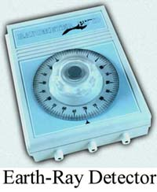
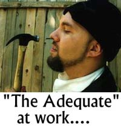
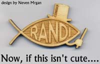

Cada vez que le echo una mirada a la repisa en la biblioteca de la JREF que contiene sólo los diez libros que he escrito (sustancialmente aumentada por las diferentes ediciones en otros lenguajes y formatos que las han seguido, hasta el momento 70cm de libros), soy consciente de que todo eso combinado no llega a ser uno solo de los libros de Carl Sagan en relación con la erudición y experiencia que se representa allí. Carl (y Dick Feynman, Stephen Gould, Martin Gardner, Isaac Asimov, Richard Dawkins, y muchos otros más que he conocido) fueron todos capaces de organizar sus pensamientos y sus palabras de forma mucho más elocuente de lo que yo he logrado hacerlo. Siento admiración por ello, y con eso en mente no pierdo oportunidad de ir a mi teclado y registrar mis pensamientos antes de que la inevitabilidad del tiempo me alcance. Estimo que me quedan dentro dos libros más. Quizá la cantidad sustituirá a la instrucción.
Como prometí (o amenacé) la semana pasada, les ofrezco aquí sólo un simple ensayo que garabateé hace un tiempo. Sentí que podría interesarles, y quizá darles algo de munición cuando los roñosos los ataquen con sus disparates. Esto es sólo la expresión de mi opinión personal, soy un profano, y les aconsejo no tomar esto como definitivo. Estoy seguro de que puede ser mejorado sustancialmente. Helo aquí.
Ciencia y pseudociencia: Las diferencias
Con frecuencia me preguntan mi definición personal de “ciencia”; y normalmente la limito a esto: Ciencia es una búsqueda de conocimiento sobre el mundo que nos rodea, organizada, disciplinada y sin prejuicios. Si tengo la oportunidad, me apresuro a agregar mis observaciones de que la ciencia no descubre “hechos”, sino más bien encuentra afirmaciones (teorías, fórmulas, descripciones) como resultado de haber examinado el mundo real, afirmaciones que describen lo que puede esperarse encontrar en condiciones establecidas. Y, de igual importancia, la ciencia siempre está preparada para ajustar, revertir, abandonar y/o agregar o quitar parte de sus afirmaciones, para acercarse más a “la verdad”. Obviamente, siempre podemos extendernos desde allí a la definición de “verdad”, que considero una meta inalcanzable (la verdad, no la definición); aunque a pesar de la Paradoja de Zenón, con el tiempo y esencialmente llegamos allí. Pero no examinemos ese asunto peliagudo.
La ciencia y la pseudociencia son opuestos exactos, como lo son la racionalidad y la religión. La ciencia, como método de trabajo, emplea principios básicos como la objetividad y la exactitud para establecer un hallazgo. Con frecuencia también usa ciertos supuestos sobre la realidad, supuestos que eventualmente deben sostenerse a sí mismos y ser probados, o el hallazgo resultante falla su comprobación. La pseudociencia, sin embargo, usa modos inventados de análisis que son fáciles de identificar, pero los casos más sutiles y por lo tanto más insidiosos y convincentes requieren mejores definiciones de los atributos involucrados.
La religión se basa en la fe ciega; no se basa en la evidencia. Descansa en creencias básicas (dogmas) que no derivan de la observación o los resultados ni se apoyan en ellos, sino que surgen de la necesidad. Es hacerse ilusiones para simplificarlo todo; no requiere verdadero pensamiento. Sobrevive por la necesidad de un mundo sin complicación y que pueda explicarse fácilmente, y se vanagloria de su rechazo de la racionalidad. Su santo o mascota es Pollyanna [1] .La religión evita la razón, la investigación y la lógica, y los elementos de la vida molestos y no deseados. La religión es reconfortante, pero también sofista y (para mí) soporífera. No quiero nada de ella.

Para una mejor comprensión de la ciencia, es de importancia primordial darse cuenta de que el conocimiento está avanzando rápidamente, en la modalidad acelerada a la que se denomina “progresión geométrica”. Muchas veces, lo que alguna vez se consideró ciencia legítima ha pasado a considerarse, y se ha probado que es, pseudociencia. Hace poco la gente del programa 20/20 de la cadena ABC de televisión me pidió ejemplos en los que la ciencia aparentemente “prueba” algo, y luego se ha visto forzada a admitir que había estado equivocada. Esta demostró ser una consulta muy interesante; aunque todavía tenemos algunas ideas demostrablemente erróneas como la “fusión fría”; algunas otras nociones igual de poderosas del pasado surgieron y cayeron bastante rápidamente. La frenología es un buen ejemplo de esta clase de nociones, y la presenté a ABC. Esta fue una ciencia que se trataba de deducir la personalidad, las capacidades y tendencias interpretando las protuberancias y depresiones que generalmente se encuentran en el cráneo. En algún momento se la consideró un tipo legítimo de psicología, y en la JREF tenemos una colección de más de 40 libros que se ocupan de este tema. Debo explicar que la única razón por la que tenemos una sección tan extensa en nuestra biblioteca es que llegó como parte de un gran cargamento de una compra en una subasta que contenía material mucho más valioso. Los que examinan esta parte de nuestra colección con frecuencia me acompañan en la especulación sobre el colosal gasto de tiempo y talento que fue desperdiciado en crear los volúmenes que mostramos aquí en nuestra ilustración; en nuestras repisas pueden hallarse libros explayándose sobre este autoengaño en cinco idiomas diferentes. Hoy, la frenología es considerada otro método inventado por científicos ingenuos y luego utilizado por otros para defraudar a los profanos ignorantes. Aunque puede que sus originadores (Gall, Spurzheim, Combe) hayan creído que era válido, ciertamente los practicantes posteriores tienen que haber descubierto que era un disparate.

Otras disciplinas que alguna vez fueron ciencias incluyen la astrología (la predicción del futuro usando los astros), la quiromancia (la predicción del futuro y personalidad de una persona por medio de la “lectura de las líneas de la vida” en la palma de la mano) o la numerología (predecir el futuro de alguien interpretando el orden de los números en la fecha de nacimiento, o el orden numérico de las letras de su nombre). Todas estas en algún momento fueron consideradas ciencias bastante confiables, y se escribieron millones de palabras sobre ellas. Se ofrecían cursos en algunas universidades sobre estas “ologías”, y se otorgaban doctorados. Hoy se las define claramente como charlatanería, aunque colegas tales como la homeopatía y la quiropráctica todavía tienen que hacer esa transición del todo. Agregaría que verdaderamente aún se ofrece la astrología como curso en el Colegio Kepler de Artes y Ciencias Astrológicas en Lynnwood, Washington, y como parte del currículum normal en ciertas universidades de la India. Increíble pero cierto…
Es reconfortante saber que algunos científicos curiosos y dedicados se han tomado realmente el trabajo de examinar “descubrimientos” tan extraños como la “poliagua” y los “rayos N”, y los han relegado a la papelera… aunque esos fenómenos se consideraron, en algún momento, como ejemplos rutilantes del progreso de la química y la física, respectivamente. Se creyó que la primera era agua con características super-húmedas; se descubrió que la evidencia ofrecida para esta conclusión era el resultado de materiales de vidrio del laboratorio que contenían rastros indetectados de detergente; eso ciertamente aumentaría la “capacidad humectante” del contenido. Los “rayos N” fueron un descubrimiento de los franceses a principios del siglo pasado, al que ellos consideraban un resultado paralelo a los Rayos Röntgen de los alemanes que hoy llamamos “rayos X”. Los rayos N fueron “encontrados” e investigados por un muy prominente y galardonado científico galo (René Blondlot), quien afirmó que los emitía una sorprendente variedad de sustancias. Dijo que eran invisibles y muy dificiles de detectar y evaluar. Efectivamente lo eran: no existen en lo absoluto. Aunque, durante los primeros meses luego del anuncio de su nacimiento, académicos de todo el mundo publicaron unos 30 artículos científicos informando validación y características adicionales de los supuestos rayos, todos esos informes fueron silenciosamente retirados cuando se encontró que su tema era imaginario. Tanto con la poliagua como con los rayos N, la ciencia se corrigió amablemente a sí misma, actuando según se la concibió.
Ah, pero no piensen que estamos libres de nociones disparatadas originadas por científicos capacitados y acreditados. Por ejemplo, aunque los rayos N se han ido hace mucho, ahora tenemos que tratar con “rayos E”. Estos últimos, descubiertos recientemente por la ciencia alemana, se dice que se originan de fuentes desconocidas en lo profundo de la Tierra, y que no pueden detectarse por ningún medio científico conocido, salvo por varillas de rabdomancia y por ciertos dispositivos manuales de “tecnología secreta”. En Europa, se venden ampliamente cobijas especiales, amuletos y otros dispositivos de protección, así como “medidores” de detección, para proteger a la gente de los efectos cancerígenos de esta radiación misteriosa, y toda una industria ha surgido basada en esta afirmación totalmente espuria. Aquí en los Estados Unidos, podemos tener el gran pseudo-orgullo de haber descubierto la “fusión fría”, una noción que aún sobrevive en ciertos círculos, unida a las nociones de energía libre y movimiento perpetuo que han costado incontables millones de dólares de investigación que podrían haber sido gastados en algo útil.
Un problema al identificar la pseudociencia es que ciertos enfoques metodológicos vagamente aceptado a temas importantes son en parte científicos y en parte pseudocientíficos, combinando métodos legítimos e ilegítimos, inferencias, y/o supuestos. Dos ejemplos de esto son, primero lo que se conoce como naturopatía: una noción que se basa parcialmente en principios fisiológicos verificados y en parte en ideas científicamente poco sólidas de cómo funciona el cuerpo humano, y segundo, lo que se da en llamar “ciencia religiosa”, la cual en parte se basa parcialmente en principios psicológicos de la sugestibilidad verificados objetivamente del tipo de “la mente sobre la materia” y parcialmente en nociones sobre los procesos corporales no confirmadas por la ciencia, como que toda enfermedad es “mental” y puede ser curada por el solo pensamiento.
Las características generales de un enfoque pseudocientífico ante los fenómenos son aquellas que ignoran, niegan o violan los atributos esenciales de la ciencia válida. Entre los sellos destacados de una pseudociencia se encuentran que:
Es ilógica, y viola una o más de las reglas básicas de la inferencia, la definición, el argumento o la prueba; piense en la homeopatía y la dilución extrema.
La pseudociencia es asistemática en que sus varias partes no se relacionan necesariamente entre sí ni se apoyan mutuamente. No tiene consistencia; piense en la astrología en oposición a la astronomía.
Requiere la suspensión de algunas reglas básicas de la razón y las modalidades establecidas de examinar teorías e ideas, exigiendo exención de esos procedimientos “anticuados” debido a sus propios trascendentales supuestos; piensen en la fusión fría y la física básica.
Normalmente es subjetiva en lugar de objetiva, dependiendo con frecuencia de singulares interpretaciones personales de los fenómenos realizadas por una autoridad particular: un dogma, una biblia o su equivalente, algún tipo de oráculo, o un líder carismático, percibido por sus seguidores como poseedor(a) de cualidades divinas; piensen en L. Ron Hubbard y la Cienciología, y en Mary Baker Eddy y la Ciencia Cristiana.
La pseudociencia es “fija” y “cerrada” en lugar de acumulativa y progresiva; sus afirmaciones no cambian para adaptarse a la nueva evidencia. La Iglesia enseñó que el Sol era perfecto e inmaculado, y condenó a un científico real como Galileo cuando descubrió que estaba marcado con manchas. No podían incorporar este descubrimiento en su visión de su creación divina.
Una prueba segura de cualquier afirmación verdaderamente científica es su capacidad de predecir el futuro: de decir qué sucederá bajo circunstancias dadas. Cuando se la somete a medidas válidas y objetivas de predicción, la pseudociencia no obtiene mejores resultados que la mera adivinación, en contraste con la ciencia real. Piense en la historia tal como la predijo la astrología, comparada con la gravedad y s = ut + ½at2.
Ya que el profano no está capacitado en los aspectos intelectuales básicos de la ciencia, con frecuencia no puede distinguir entre los científicos legítimos y sus imitadores. En torno a él, cada día, oye o ve autoridades aparentes (con frecuencia con títulos, genuinos o asumidos) que lo exhortan a creer sus afirmaciones. La resolución de este dilema es una tarea abrumadora para el profano, ya que determinar qué y quién es acreditado (y por lo tanto confiable) en ciencia, es una pregunta que exige conocimiento tanto de la ciencia en general como del campo particular involucrado. Por lo tanto, el no especialista con frecuencia se confunde con las afirmaciones conflictivas que se hacen en nombre de la ciencia. El científico legítimo mismo, por momento, puede ser confundido así cuando se enfrenta con argumentos aparentemente convincentes que yacen fuera de su campo de conocimiento especial. En parapsicología se encuentra esto con frecuencia: los parapsicólogos (al igual que otros científicos) con frecuencia no desean llamar a especialistas como los magos, quienes bien pueden tener la experiencia especializada necesaria para explicar factores que de otro modo no serían comprendidos (o siquiera notados) por el observador no entrenado en tales cuestiones.

(Actualmente, mis estaciones de televisión pública locales están presentando tanto al Dr. Wayne Dyer y al Dr. Gary Null en su período de recolección de fondos, para aprovechar el gusto del público por la charlatanería. Ambos hombres alardean de sus doctorados, ambos venden disparates. Dyer hace afirmaciones increíblemente ingenuas tales como que si uno sólo reúne suficiente determinación “todo es posible”, y Null prescribe imanes y otras herramientas medievales para evitar el nvejecimiento. Predica la juventud eterna. Ahora bien, Null tiene menos de 60 años, pero reconozco el pelo teñido y el maquillaje, y se ve mucho más viejo incluso que yo, uno hombre que le lleva 15 años. ¿Cómo puede ser? Mi suposición es que el buhonero de magia más favorecido por la televisión pública estadounidense, Deepak Chopra, está ocupado en otro lado vendiendo sus potingues y no está disponible para la televisión pública esta temporada.)
Hay otra noción falsa que habitualmente tiene el profano, y es que los descubrimientos científicos importantes son con frecuencia el producto de las mentes aficionadas, y por lo tanto que la autoridad del científico a veces debe ser sospechada críticamente. La asunción filosófica es que el descubrimiento del algún hecho o idea nuevos normalmente es cuestión de accidente, y por lo tanto que el descubrimiento en ciencia no es esencialmente diferente de, digamos, el hallazgo de un tesoro enterrado, y cualquiera puede encontrarse con un cofre de doblones sin tener educación alguna. Aunque hubo una vez cuando los grandes descubrimientos fueron realizados por por individuos dotados (piense en Alexander Fleming y la penicilina, Marconi y la radio) la mayor parte de los avances ahora son aportados por equipos o comités organizados; piensen en el transistor y la exploracion lunar.
Con frecuencia, como hemos visto con frecuencia, unos pocos científicos instruidos son simplemente charlatanes, y un porcentaje mayor están autoengañados honestamente. Para cualquier científico, asumir que porque tiene educación superior no puede ser engañado ni autoengañado es un grave error. El profano tiene mucha más dificultad diferenciando entre los científicos reales y los científicos que están simple, inocentemente equivocados y han elegido residir en la proverbial (y cada vez más abarrotada) Torre de Marfil. Aunque un científico en una sociedad libre tiene el mismo derecho que cualquier otro ciudadano para hablar de cualquier tema que quiera, muchos científicos confiables deciden hablar o escribir públicamente sobre temas fuera de sus campos establecidos de logros o experiencia. Cuando un científico pretende hablar con autoridad fuera de su campo de conocimiento, puede que esté explotando su repotación (logros y atributos) y haciendo uso de esa reputación para extender su autoridad en un campo posiblemente no relacionado. Un académico que ha obtenido credibilidad en el campo de las estadísticas no puede afirmar legítimamente que por lo tanto habla con autoridad sobre política, ni que puede detectar los intentos de engaño. En la sociedad de hoy, estamos muy acostumbrados a ver a las celebridades (con frecuencia gente de la ciencia) respaldando varios productos y servicios que no tienen relación alguna con sus vidas profesionales, y estrellas del cine vendiendo jabón y planes hipotecarios con libertad sin levantar muchas sospechas del público sobre por qué aparecen en nuestras pantallas y nuestras revistas realizando esta tarea. Nos ciega fácilmente el glamour y la reputación, los que con frecuencia no le dan valor alguno a tales respaldos. Esto se aplica tanto a las estrellas de cine como a los graduados.
Además, los enfoques populares de la ciencia con frecuencia están teñidos de alguna variante del tema del “noble salvaje” de Rousseau: muchos creen que los descubrimientos modernos simplemente debieron existir en tiempos antiguos, y mientras más atrás en el tiempo, mejor. Señalan cosas tales como el muy temprano (y exitoso) uso de varias sustancias derivadas de las plantas por parte de los médicos brujos, y el reconocimiento muy temprano de los estudiosos chinos de los fundamentos del cálculo integral (descubrieron cómo calcular la superficie del círculo, pero aparentemente no fueron más allá con esta maravillosa idea). Aunque es cierto que los pensadores tempranos con frecuencia realizaron descubrimientos muy importantes, con frecuencia fue por accidente; la digital sería un excelente ejemplo de un descubrimiento accidental, aunque sus efectos requerían ser boservados y luego registrados cuidadosamente para poder ingresar en las farmacopeas primitivas. Sin embargo, determinar la superficie de una figura que no podía ser dividida de forma simple en una serie de triángulos requirió una determinada aplicación del intelecto y la curiosidad. Ese descubrimiento no fue casual; se buscó deliberadamente.
Con frecuencia escucho ese grito jubiloso: “¡La ciencia no lo sabe todo!”, o “¡La ciencia no está segura de nada”, que se me lanza como evidencia de mi abismal ingenuidad. La exultación y los abucheos aumentan cuando admito libremente que ambas afimaciones son muy ciertas, ya que esa admisión parece establecer la imperfección de la ciencia, cuando hace exactamente lo contrario. La ciencia nunca ha afirmado “saber” todo, o, incluso, cosa alguna, con certeza absoluta. Esa es su gloria, no su vergüenza. Expresa afirmacinoes, relaciones y medidas, predice el resultado de circunstancias dadas, y provee información; todos los cuales son tentativos aunque bien fundados y confiables hasta un grado definible. Aprendemos de lo que la ciencia revela cómo manejarnos y crecer dentro de las limitaciones de nuestro mundo, cómo sobrevivir, y cómo transmitir a otras generaciones lo que hemos aprendido.
Y eso es hermoso.
Difícilmente sea sólo adecuado
Andy Blau, Extraordinario Mago, (a) “Zoltan el Adecuado”, define el “condicionamiento retroactivo” como “poner saliva en la boca de un perro para hacer sonar una campana”. Y comparte con nosotros una cita del libro de Terry Pratchett “El ladrón del tiempo”:
—… hace que uno se pregunte si hay algo en la astrología, después de todo.
—Oh, lo hay —dijo Susan—. Autoengaño, ilusiones y credulidad.
El pez
Este “pez” fue diseñado para mí por Neven Mrgan, de St. Petersburgo, Florida, y fabricado por Larry Porter. Ahora adorna la puerta de mi oficina, junto con varios cerdos volantes y otras extrañas criaturas… ¡Mi agradecimiento a Bill Hall y el Club de Escépticos y Humanistas del St. Petersburg College!

Notas
Comentarios
Comments powered by Disqus